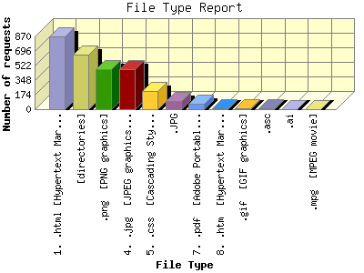

Report generated by Analog 6.0 and Report Magic 2.21
|
Web Server Statistics for "Harish Narayanan (hnarayan) - August 2006" Report generated by Analog 6.0 and Report Magic 2.21 |
The File Type Report identifies the type of information that is requested from the web site. GIF and JPG are the two types of graphic (image) files that are most commonly supported by web browsers. HTML (sometimes abbreviated HTM), ASP, and [directories] all represent actual pages. The number of image requests will almost always outnumber page requests as one page may contain several images.
This report shows all results. This report is sorted by number of requests.

| File Type | Number of requests | Number of bytes transferred | Percentage of the bytes | Percentage of the requests | |
|---|---|---|---|---|---|
| 1. | .html [Hypertext Markup Language] | 866 | 13.075 MB | 11.73% | 30.05% |
| 2. | [directories] | 657 | 1.499 MB | 1.34% | 22.80% |
| 3. | .png [PNG graphics] | 482 | 37.668 MB | 33.80% | 16.72% |
| 4. | .jpg [JPEG graphics] | 479 | 33.320 MB | 29.90% | 16.62% |
| 5. | .css [Cascading Style Sheets] | 215 | 895.098 KB | 0.78% | 7.46% |
| 6. | .JPG | 93 | 1.013 MB | 0.91% | 3.23% |
| 7. | .pdf [Adobe Portable Document Format] | 62 | 18.666 MB | 16.75% | 2.15% |
| 8. | .htm [Hypertext Markup Language] | 9 | 892.740 KB | 0.78% | 0.31% |
| 9. | .gif [GIF graphics] | 6 | 8.009 KB | 0.01% | 0.21% |
| 10. | .asc | 6 | 7.775 KB | 0.01% | 0.21% |
| 11. | .ai | 4 | 0.000 B | 0.00% | 0.14% |
| 12. | .mpg [MPEG movie] | 3 | 4.449 MB | 3.99% | 0.10% |
This report was generated on November 12, 2006 23:02.
Report time frame August 1, 2006 02:11 to August 31, 2006 23:57.
| Web statistics report produced by: | |
 Analog 6.0 Analog 6.0 |  Report Magic 2.21 Report Magic 2.21 |